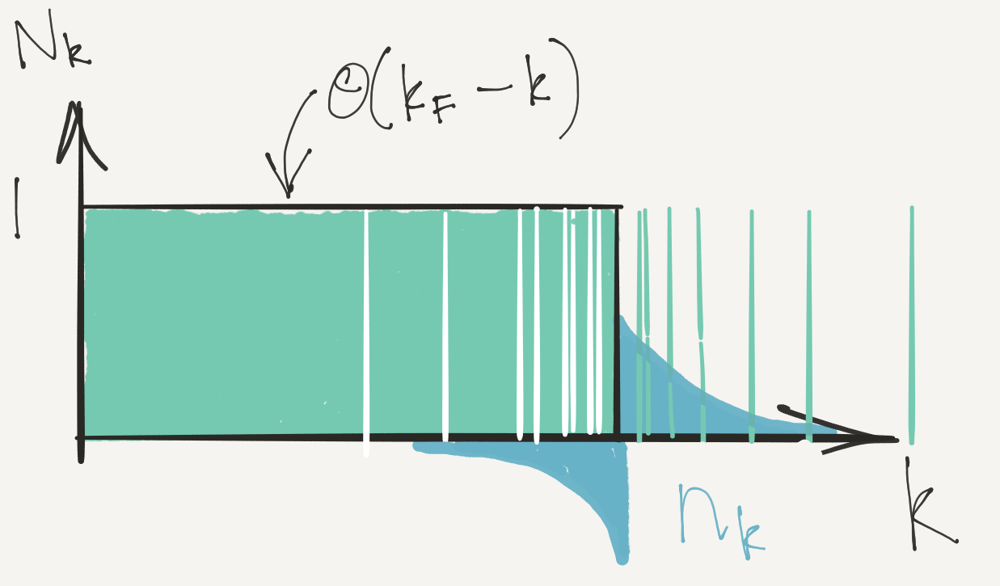
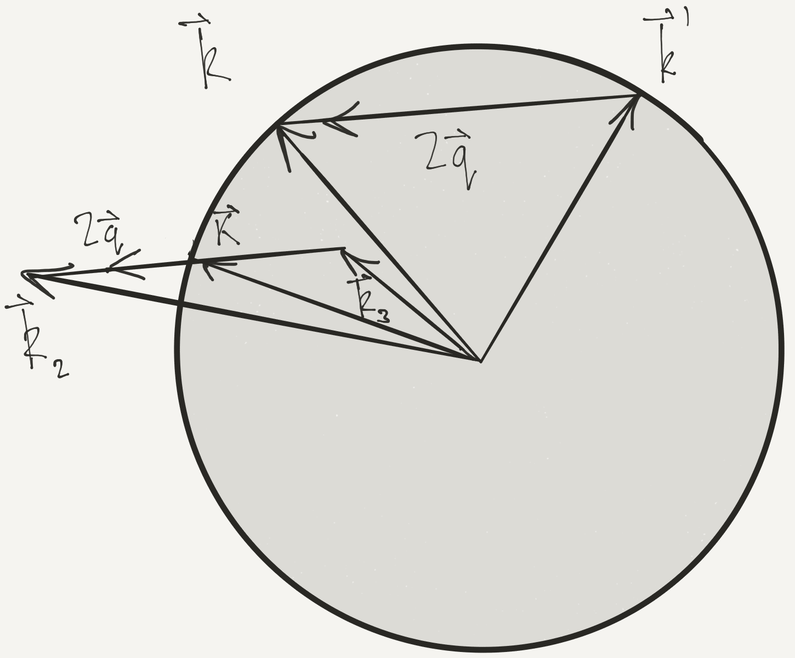
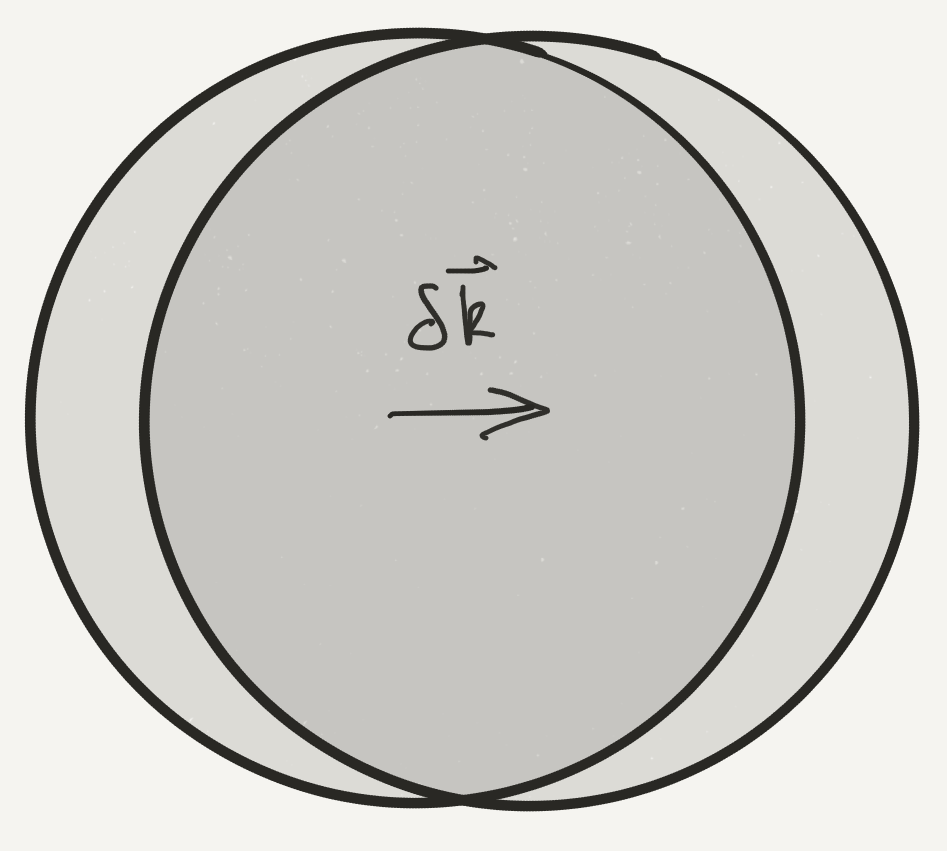

Fermi Gas
Fermi Gas
We’ll study Fermi gas with weak interactions (perturbation theory)
Illustrates Landau’s Fermi liquid theory, a ‘standard model’ of condensed matter
Landau’s theory applies more generally, even when interactions not weak
Weakly Interacting Fermi Gas
- Fermi gas with short-ranged interactions
H = \int d\mathbf{r}\left[ \sum_{s=\uparrow,\downarrow}\frac{1}{2m}\nabla\psi^\dagger_s\cdot\nabla\psi^{\vphantom{\dagger}}_s + U_0 \psi^\dagger_\uparrow\psi^\dagger_\downarrow\psi^{\vphantom{\dagger}}_\downarrow\psi^{\vphantom{\dagger}}_\uparrow\right]
- Work in momentum space H =\sum_{\mathbf{k},s} \epsilon(\mathbf{k})a^\dagger_{\mathbf{k},s}a^{\vphantom{\dagger}}_{\mathbf{k},s} + \overbrace{\frac{U_0}{V}\sum_{\mathbf{k}_1+\mathbf{k}_2=\mathbf{k}_3+\mathbf{k}_4} a^\dagger_{\mathbf{k}_1,\uparrow}a^\dagger_{\mathbf{k}_2,\downarrow}a^{\vphantom{\dagger}}_{\mathbf{k}_3,\downarrow}a^{\vphantom{\dagger}}_{\mathbf{k}_4,\uparrow}}^{\equiv H_\text{int}} with \epsilon(\mathbf{k})=\mathbf{k}^2/2m, and V the volume
U_0=0: eigenstates are product states \lvert{\mathbf{N}}\rangle of single particle momentum states specified by the occupancies N_{s}(\mathbf{k}) = 0,1
Ground state is Fermi sphere of radius k_\text{F} in momentum space with N_{s}(\mathbf{k}) = \theta(k_F-\lvert{\mathbf{k}}\rvert).
Low energy excited states will have N_{s}(\mathbf{k})=1 for \lvert{\mathbf{k}}\rvert\ll k_\text{F} and N_{s}(\mathbf{k})=0 for \lvert{\mathbf{k}}\rvert\gg k_\text{F}.
In perturbation theory we can still label eigenstates by these occupation numbers even though eigenstates \neq\lvert{\mathbf{N}}\rangle
- Without interaction energy of a state \lvert{\mathbf{N}}\rangle is
E^{(0)}(\mathbf{N}) = \sum_{\mathbf{k},s} \epsilon(\mathbf{k})N_{s}(\mathbf{k})
For U_0\neq 0 energy E(\mathbf{N}) is function of labels, but no longer linear
Second order expansion of energy in terms of deviation of occupancies from ground state values is key ingredient of Landau’s theory
Perturbation Theory to Second Order
- Second order perturbation theory for the energies
\begin{align*} E^{(1)}(\mathbf{N}) &= \Braket{\mathbf{N}|H_\text{int}|\mathbf{N}}\\ E^{(2)}(\mathbf{N}) &= \sum_{\mathbf{N}'\neq \mathbf N}\frac{\lvert{\braket{\mathbf{N'}|H_\text{int}|\mathbf{N}}}\rvert^2}{E^{(0)}(\mathbf{N})-E^{(0)}(\mathbf{N}')} \end{align*}
- First order correction is easy
E^{(1)}(\mathbf{N}) = \frac{U_0}{V} \sum_{\mathbf{k},\mathbf{k}'} N_{\uparrow}(\mathbf{k})N_{\downarrow}(\mathbf{k}') = \frac{U_0}{V}N_\uparrow N_\downarrow (energy used in Stoner criterion in Lecture 6)
- For second order we need \Braket{\mathbf{N}'|H_\text{int}|\mathbf{N}}, nonzero if \begin{align*} N'_{\mathbf{k}_1,\uparrow} = N_{\uparrow}(\mathbf{k}_1) + 1, \quad N'_{\downarrow}(\mathbf{k}_2) = N_{\downarrow}(\mathbf{k}_2) + 1\\ N'_{\downarrow}(\mathbf{k}_3) = N_{\downarrow}(\mathbf{k}_3) - 1, \quad N'_{\uparrow}(\mathbf{k}_4) = N_{\uparrow}(\mathbf{k}_4) - 1, \end{align*} for \mathbf{k}_i satisfying \mathbf{k}_1+\mathbf{k}_2=\mathbf{k}_3+\mathbf{k}_4 \Braket{\mathbf{N}'|H_\text{int}|\mathbf{N}} = \frac{U_0}{V} \left(1-N_{\uparrow}(\mathbf{k}_1)\right)\left(1-N_{\downarrow}(\mathbf{k}_2)\right)N_{\downarrow}(\mathbf{k}_3)N_{\uparrow}(\mathbf{k}_4) (ignoring any coinciding momenta; occupancies 0 or 1)
E^{(2)}(\mathbf{N}) = \left(\frac{U_0}{V}\right)^2 \sum_{\mathbf{k}_1+\mathbf{k}_2=\mathbf{k}_3+\mathbf{k}_4}\frac{\left(1-N_{\uparrow}(\mathbf{k}_1)\right)\left(1-N_{\downarrow}(\mathbf{k}_2)\right)N_{\downarrow}(\mathbf{k}_3)N_{\uparrow}(\mathbf{k}_4)}{\epsilon(\mathbf{k}_3)+\epsilon(\mathbf{k}_4)-\epsilon(\mathbf{k}_1)-\epsilon(\mathbf{k}_2)}
Landau f function
E^{(2)}(\mathbf{N}) has three independent momentum sums! 🙀
We are after excitation energies, so expand in change in occupation
N_{s}(\mathbf{k}) = \theta(k_F-\lvert{\mathbf{k}}\rvert) + n_{s}(\mathbf{k})
- n_\mathbf{k} is mean deviation from Fermi sphere in continuum limit:

- Excitation energy expanded in n_\mathbf{k}
\Delta E = \sum_{\mathbf{k},s} \varepsilon_s(\mathbf{k})n_{s}(\mathbf{k}) + \frac{1}{2V}\sum_{\mathbf{k}, s,\mathbf{k}', s'} f_{s^{}s'}(\mathbf{k},\mathbf{k}')n_{s}(\mathbf{k})n_{s'}(\mathbf{k}')
This is Landau’s key idea, not restricted to perturbation theory
At first order \begin{align*} \varepsilon_s(\mathbf{k}) &= \epsilon(\mathbf{k}) + \frac{U_0 N_{\bar s}}{V}+\cdots\\ f_{\uparrow\downarrow} &= f_{\downarrow\uparrow} = U_0+\cdots,\quad f_{\uparrow\uparrow}=f_{\downarrow\downarrow}=0+\cdots \end{align*} \bar s is \bar\uparrow=\downarrow, \bar\downarrow=\uparrow 🥱
- Second order contributions to f-function more interesting
E^{(2)}(\mathbf{N}) = \left(\frac{U_0}{V}\right)^2 \sum_{\mathbf{k}_1+\mathbf{k}_2=\mathbf{k}_3+\mathbf{k}_4}\frac{\left(1-N_{\uparrow}(\mathbf{k}_1)\right)\left(1-N_{\downarrow}(\mathbf{k}_2)\right)N_{\downarrow}(\mathbf{k}_3)N_{\uparrow}(\mathbf{k}_4)}{\epsilon(\mathbf{k}_3)+\epsilon(\mathbf{k}_4)-\epsilon(\mathbf{k}_1)-\epsilon(\mathbf{k}_2)}
N_{s}(\mathbf{k}) = \theta(k_F-\lvert{\mathbf{k}}\rvert) + n_{s}(\mathbf{k})
\begin{align*} f_{\uparrow\uparrow}(\mathbf{k},\mathbf{k}') = -\frac{U_0^2}{V}\left[\sum_{\mathbf{k}+\mathbf{k}_3=\mathbf{k}'+\mathbf{k}_2} \frac{N_{\downarrow}(\mathbf{k}_3)(1-N_{\downarrow}(\mathbf{k}_2))}{\epsilon(\mathbf{k})+\epsilon(\mathbf{k}_3)-\epsilon(\mathbf{k}')-\epsilon(\mathbf{k}_2)}\right.\nonumber\\ \left.+\sum_{\mathbf{k}'+\mathbf{k}_3=\mathbf{k}+\mathbf{k}_2}\frac{N_{\downarrow}(\mathbf{k}_3)(1-N_{\downarrow}(\mathbf{k}_2))}{\epsilon(\mathbf{k}')+\epsilon(\mathbf{k}_3)-\epsilon(\mathbf{k})-\epsilon(\mathbf{k}_2)}\right] \end{align*}
- f_{\uparrow\downarrow}(\mathbf{k},\mathbf{k}') is more complicated \begin{align*} f_{\uparrow\downarrow}(\mathbf{k},\mathbf{k}') = U_0 + f_{\uparrow\uparrow}(\mathbf{k},\mathbf{k}') +\frac{U_0^2}{V}\left[\sum_{\mathbf{k}+\mathbf{k}'=\mathbf{k}_3+\mathbf{k}_4}\frac{N(\mathbf{k}_3)N(\mathbf{k}_4)}{\epsilon(\mathbf{k}_3)+\epsilon(\mathbf{k}_4)-2E_\text{F}}\right.\nonumber\\ \left.\sum_{\mathbf{k}+\mathbf{k}'=\mathbf{k}_1+\mathbf{k}_2}\frac{(1-N(\mathbf{k}_1))(1-N(\mathbf{k}_2))}{2E_\text{F}-\epsilon(\mathbf{k}_1)-\epsilon(\mathbf{k}_2)}\right] \end{align*} (just for reference)
n_{s}(\mathbf{k})\neq 0 in energy window of size k_\text{B} T around Fermi surface
At low T take \lvert{\mathbf{k}}\rvert=\lvert{\mathbf{k}'}\rvert=k_\text{F}. New feature at second order is nontrivial dependence of f_{s^{}s'}(\mathbf{k},\mathbf{k}') on angle between \mathbf{k} and \mathbf{k}'.
Assume ground state unpolarized, i.e. N_{s}(\mathbf{k}) independent of s
Let’s work out angular dependence for f_{\uparrow\uparrow}(\mathbf{k},\mathbf{k}') (simpler, only have one independent momentum 😀)
Thermodynamic limit
\begin{align*} f_{\uparrow\uparrow}(\mathbf{k},\mathbf{k}') = \frac{U_0^2}{(2\pi)^3}\left[\int_{\substack{\lvert{\mathbf{k}_3}\rvert<k_\text{F},\lvert{\mathbf{k}_2}\rvert>k_\text{F}\\ \mathbf{k}+\mathbf{k}_3=\mathbf{k}'+\mathbf{k}_2 }} \frac{d\mathbf{k}_3}{\epsilon(\mathbf{k}_2)-\epsilon(\mathbf{k}_3)} +\int_{\substack{\lvert{\mathbf{k}_3}\rvert<k_\text{F},\lvert{\mathbf{k}_2}\rvert>k_\text{F}\\ \mathbf{k}'+\mathbf{k}_3=\mathbf{k}+\mathbf{k}_2 }}\frac{d\mathbf{k}_3}{\epsilon(\mathbf{k}_2)-\epsilon(\mathbf{k}_3)}\right] \end{align*}
- Need integral
\int_{\substack{\lvert{\mathbf{k}_3}\rvert<k_\text{F},\lvert{\mathbf{k}_2}\rvert>k_\text{F}\\ \mathbf{k}+\mathbf{k}_3=\mathbf{k}'+\mathbf{k}_2 }} \frac{d\mathbf{k}_3}{\epsilon(\mathbf{k}_2)-\epsilon(\mathbf{k}_3)}
Denominator can be written (\mathbf{k}-\mathbf{k}' is fixed) \epsilon(\mathbf{k}_2)-\epsilon(\mathbf{k}_3)= \frac{1}{2m}\left(\mathbf{k}_2+\mathbf{k}_3\right)\cdot\left(\mathbf{k}_2-\mathbf{k}_3\right) = \frac{1}{2m}\left(\mathbf{k}_2+\mathbf{k}_3\right)\cdot\left(\mathbf{k}-\mathbf{k}'\right)
Notation \mathbf{K} = \frac{1}{2}\left(\mathbf{k}_2+\mathbf{k}_3\right),\quad \mathbf{q}= \frac{1}{2}\left(\mathbf{k}_2-\mathbf{k}_3\right)

Denominator becomes (for fixed \mathbf{q}) \epsilon(\mathbf{k}_2)-\epsilon(\mathbf{k}_3) = \frac{2}{m}\mathbf{K}\cdot\mathbf{q}
Only angle \theta between \mathbf{K} and \mathbf{q} enters integral
Conditions \lvert{\mathbf{k}_2}\rvert>k_\text{F} and \lvert{\mathbf{k}_3}\rvert<k_\text{F} become
\begin{align*} \left(\mathbf{K}+\mathbf{q}\right)^2>k_\text{F}^2,\quad \left(\mathbf{K}-\mathbf{q}\right)^2<k_\text{F}^2 \end{align*}
which gives range of K_-(\theta)<\lvert{\mathbf{K}}\rvert<K_+(\theta)
K_{\pm}(\theta)=\pm q\lvert{\cos\theta}\rvert+\sqrt{k_\text{F}^2-q^2\sin^2\theta},\qquad \theta<\pi/2
- In terms of these variables
\begin{align*} \int_{\substack{\lvert{\mathbf{k}_3}\rvert<k_\text{F},\lvert{\mathbf{k}_2}\rvert>k_\text{F}\\ \mathbf{k}+\mathbf{k}_3=\mathbf{k}'+\mathbf{k}_2 }} \frac{d\mathbf{k}_3}{\epsilon(\mathbf{k}_2)-\epsilon(\mathbf{k}_3)}&= \pi m\int_0^{\pi/2} d\theta \int_{K_-(\theta)}^{K_+(\theta)} \frac{K\sin\theta}{q\cos\theta} dK\nonumber\\ &=2\pi m\int_0^{\pi/2} d\theta \sin\theta \sqrt{k_\text{F}^2-q^2\sin^2\theta} \end{align*}
- Other integral is same but in interval (\pi/2,\pi). Finally… \begin{align*} f_{\uparrow\uparrow}(\mathbf{k},\mathbf{k}') &= \frac{U_0^2 m}{(2\pi)^2} \int_0^{\pi} d\theta \sin\theta \sqrt{k_\text{F}^2-q^2\sin^2\theta}\nonumber\\ &=\frac{U_0^2 m k_\text{F}}{(2\pi)^2}\left[1 - \frac{\cos^2\phi/2}{2\sin\phi/2}\log\left(\frac{1-\sin\phi/2}{1+\sin\phi/2}\right)\right] \end{align*} \phi is the angle between \mathbf{k} and \mathbf{k}' i.e. \lvert{\mathbf{k}-\mathbf{k}'}\rvert=2q=2k_\text{F}\sin\phi/2
- Write quadratic contribution in a way that allows a rotationally invariant formulation (see the Appendix)
\begin{align*} \frac{1}{2V \nu(E_F)}\sum_{\mathbf{k},\mathbf{k}'} &\left(F(\phi)\left[n_\uparrow(\mathbf{k})+n_\downarrow(\mathbf{k})\right]\left[n_\uparrow(\mathbf{k}')+n_\downarrow(\mathbf{k}')\right]\right.\\ &\left.+ G(\phi)\left[n_\uparrow(\mathbf{k})-n_\downarrow(\mathbf{k})\right]\left[n_\uparrow(\mathbf{k}')-n_\downarrow(\mathbf{k}')\right]\right) \end{align*} \begin{align*} F(\phi)= \frac{\nu(E_\text{F})}{2}\left[f_{\uparrow\uparrow}(\mathbf{k},\mathbf{k}') + f_{\uparrow\downarrow}(\mathbf{k},\mathbf{k}')\right]\\ G(\phi)= \frac{\nu(E_\text{F})}{2}\left[f_{\uparrow\uparrow}(\mathbf{k},\mathbf{k}') - f_{\uparrow\downarrow}(\mathbf{k},\mathbf{k}')\right] \end{align*}
- F(\phi) and G(\phi) scaled by density of states per unit volume at Fermi surface \nu(E_\text{F})\equiv k_{\text{F}}m/\pi^2.
The explicit form of the functions F(\phi) and G(\phi) is (see Landau et al. (1980))
\begin{aligned} F(\phi)=\frac{\nu(E_\text{F})U_0}{2}\left[\left(1+ \frac{\nu(E_\text{F})U_0 }{2}\left[2+\frac{\cos\phi}{2\sin\phi/2}\log\frac{1+\sin\phi/2}{1-\sin\phi/2}\right]\right)\right]\\ G(\phi)=\frac{\nu(E_\text{F})U_0}{2}\left[\left(1+ \frac{\nu(E_\text{F})U_0}{2}\left[1-\frac{1}{2}\sin\phi/2\log\frac{1+\sin\phi/2}{1-\sin\phi/2}\right]\right)\right] \end{aligned}
The message to take away from this calculation is not the detailed functional forms, but the fact that the interaction between quasiparticles in an interacting Fermi gas is defined in terms of a pair of functions F(\phi) and G(\phi)
Our definition of f implied quantization axis for spin
To write things in invariant way, think of occupation number N(\mathbf{k}) as 2\times 2 matrix
\mathsf{N}(\mathbf{k})=\begin{pmatrix} N_{\uparrow\uparrow}(\mathbf{k}) & N_{\uparrow\downarrow}(\mathbf{k}) \\ N_{\downarrow\uparrow}(\mathbf{k}) & N_{\downarrow\downarrow}(\mathbf{k}) \end{pmatrix}
- f-function then has four spin indices
\frac{1}{2V}\sum_{\mathbf{k}, s_1,s_2,\mathbf{k}', s_3,s_4} f_{s_1s_2,s_3s_4}(\mathbf{k},\mathbf{k}')n_{s_1s_2}(\mathbf{k})n_{s_3s_4}(\mathbf{k}')
\begin{align*} f_{s_1s_2,s_3s_4}(\mathbf{k},\mathbf{k}') = \frac{U_0}{2}\left[\left(1+ \frac{mU_0 k_\text{F}}{2\pi^2}\left[2+\frac{\cos\phi}{2\sin\phi/2}\log\frac{1+\sin\phi/2}{1-\sin\phi/2}\right]\right)\delta_{s_1s_2}\delta_{s_3s_4}\right.\nonumber\\ \left.\left(1+ \frac{mU_0 k_\text{F}}{2\pi^2}\left[1-\frac{1}{2}\sin\phi/2\log\frac{1+\sin\phi/2}{1-\sin\phi/2}\right]\right)\boldsymbol{\sigma}_{s_1s_2}\cdot\boldsymbol{\sigma}_{s_3s_4}\right] \end{align*} (again, just for reference)
- Key message: interaction between quasiparticles in an interacting Fermi gas is defined in terms of a pair of functions \nu(E_F)f_{s_1s_2,s_3s_4}(\mathbf{k},\mathbf{k}') = F(\phi) \delta_{s_1s_2}\delta_{s_3s_4} + G(\phi)\boldsymbol{\sigma}_{s_1s_2}\cdot\boldsymbol{\sigma}_{s_3s_4}
- F(\phi) and G(\phi) made dimensionless by scaling by density of states at Fermi surface \nu(E_F)\equiv k_{\text{F}}m/\pi^2.
Quasiparticle energy \varepsilon_s(\mathbf{k})
\Delta E = \sum_{\mathbf{k},s} \varepsilon_s(\mathbf{k})n_{s}(\mathbf{k}) + \frac{1}{2V}\sum_{\mathbf{k}, s,\mathbf{k}', s'} f_{s^{}s'}(\mathbf{k},\mathbf{k}')n_{s}(\mathbf{k})n_{s'}(\mathbf{k}').
\varepsilon_s(\mathbf{k}) will involve two momentum sums 😟
What can we say on general grounds? Near Fermi surface expect
\varepsilon_s(\mathbf{k}) - E_\text{F} \approx v_\text{F}(\lvert{\mathbf{k}}\rvert-k_\text{F})
- Fermi velocity v_\text{F} altered by interactions. Define effective mass
m_* = \frac{k_\text{F}}{v_\text{F}}
Can get m_* using results we have already, using one simple trick
Shift momentum of each quasiparticle by \delta\mathbf{k}, giving new N_s(\mathbf{k})
\begin{align*} N_s(\mathbf{k}-\delta\mathbf{k}) &=\theta(k_F-\lvert{\mathbf{k}-\delta\mathbf{k}}\rvert) + n_{s}(\mathbf{k}-\delta\mathbf{k})+\cdots\nonumber\\ &=\theta(k_F-\lvert{\mathbf{k}}\rvert) + n_s(\mathbf{k}) + \delta(k_F-\lvert{\mathbf{k}}\rvert)\hat{\mathbf{k}}\cdot\delta\mathbf{k}- \delta\mathbf{k}\nabla_\mathbf{k}n_{s}(\mathbf{k})+\cdots. \end{align*}

- Compute energy using Landau functional
\begin{align*} N_s(\mathbf{k}-\delta\mathbf{k}) &=\theta(k_F-\lvert{\mathbf{k}}\rvert) + n_s(\mathbf{k}) + \delta(k_F-\lvert{\mathbf{k}}\rvert)\hat{\mathbf{k}}\cdot\delta\mathbf{k}- \delta\mathbf{k}\nabla_\mathbf{k}n_{s}(\mathbf{k})+\cdots. \end{align*}
- Treat last three terms as n_s(\mathbf{k}). Excitation energy changes \begin{align*} \Delta E(\text{after})-\Delta E(\text{before}) = \sum_{\mathbf{k},s} n_{s}(\mathbf{k})\delta\mathbf{k}\cdot\nabla_\mathbf{k}\varepsilon_s(\mathbf{k}) \nonumber\\ +\frac{1}{V}\sum_{\mathbf{k}, s,\mathbf{k}', s'} f_{s^{}s'}(\mathbf{k},\mathbf{k}')n_{s}(\mathbf{k})\left[\delta(k_F-\lvert{\mathbf{k}'}\rvert)\hat{\mathbf{k}}'\cdot\delta\mathbf{k}- \nabla_{\mathbf{k}'}n_{s'}(\mathbf{k}')\cdot\delta\mathbf{k}\right]. \end{align*} (to first order in \delta\mathbf{k}. Integrate by parts in first term)
- On grounds of Galilean invariance, this change must be \Delta E(\text{after})-\Delta E(\text{before}) = \frac{\mathbf{P}}{m}\cdot\delta\mathbf{k} where total momentum \mathbf{P} is
\mathbf{P} = \sum_{\mathbf{k},s} \mathbf{k}n_{s}(\mathbf{k}).
- If two expressions for \Delta E(\text{after})-\Delta E(\text{before}) equal for all n_s(\mathbf{k}) and \delta\mathbf{k} to first order
\frac{\mathbf{k}}{m} = \nabla_\mathbf{k}\varepsilon_s(\mathbf{k}) + \sum_{s'}\int f_{s^{}s'}(\mathbf{k},\mathbf{k}')\delta(k_F-\lvert{\mathbf{k}'}\rvert)\hat{\mathbf{k}}' \frac{d\mathbf{k}'}{(2\pi)^3}
- For momenta close to the Fermi surface
\frac{\mathbf{k}}{m} = \frac{\mathbf{k}}{m_*} +\frac{1}{m} \int F(\phi) \mathbf{k}' \frac{d\Omega_{\mathbf{k}'}}{4\pi}
- If \mathbf{k}'=\cos\phi \mathbf{k}+ \sin\phi \mathbf{k}_\perp, with \mathbf{k}_\perp\cdot\mathbf{k}=0, we get
\frac{1}{m} = \frac{1}{m_*} +\frac{1}{m} \int F(\phi) \cos\phi \frac{\sin\phi d\phi}{2}
For the F(\phi) that we found in 2^{\text{nd}} order perturbation theory \frac{m_*}{m} = 1 + \frac{1}{30\pi^4}(7\log 2 - 1)\left(mU_0k_\text{F}\right)^2+\cdots. (Use the substitution u=\sin\phi/2 to do the integral.)
In systems with strong interactions m_*/m may be much larger!
In heavy fermion materials m_*/m can approach 1000! Landau’s picture of fermionic quasiparticles still applies.
Eigenstates in Perturbation Theory: What is a Quasiparticle?
What do these quasiparticle states look like? Let’s see what perturbation theory says
At first order we have
\lvert{\mathbf{N}^{(1)}}\rangle = \sum_{\mathbf{N}'\neq \mathbf N}\frac{\braket{\mathbf{N'}|H_\text{int}|\mathbf{N}}}{E^{(0)}(\mathbf{N})-E^{(0)}(\mathbf{N}')}\lvert{\mathbf{N}'}\rangle
Consider the Fermi sea ground state \lvert{\text{FS}}\rangle. What states \lvert{\mathbf{N'}}\rangle can appear this case?
Only possibility is that the interaction creates two particle-hole pairs out of the Fermi sea, with total momentum zero.

What about an excited state? If we consider the state a^\dagger_{\mathbf{k},s}\lvert{\text{FS}}\rangle two kinds of states can contribute
Create a pair of particle-hole pairs
Create a single particle-hole pair and move particle at \mathbf{k}

Consider a^\dagger_{\mathbf{k},s}\lvert{0}\rangle, creating a particle in exact ground state
Since \lvert{0}\rangle includes the first type of state (2 particle-hole pair states), a^\dagger_{\mathbf{k},s}\lvert{0}\rangle is only missing second kind
Single quasiparticle state is \begin{align*} \lvert{\mathbf{k},s}\rangle &= \sqrt{\frac{z_k}{\braket{0|a^{\vphantom{\dagger}}_{\mathbf{k},s}a^\dagger_{\mathbf{k},s}|0}}}a^\dagger_{\mathbf{k},s}\lvert{0}\rangle \\ &+ \frac{U_0}{V}\sum_{\substack{\mathbf{k}_1+\mathbf{k}_2=\mathbf{k}_3+\mathbf{k}\\ s'}}\frac{a^\dagger_{\mathbf{k}_1,s}a^\dagger_{\mathbf{k}_2,s'}a^{\vphantom{\dagger}}_{\mathbf{k}_3,s'}\lvert{\text{FS}}\rangle}{\epsilon(\mathbf{k}_1)+\epsilon(\mathbf{k}_2)-\epsilon(\mathbf{k}_3)-\epsilon(\mathbf{k})} \end{align*} \sqrt{z_k} is a normalization factor
Normalizing, 1-z_\mathbf{k} is
\begin{align*} \left(\frac{U_0}{V}\right)^2\sum_{\substack{\mathbf{k}_1+\mathbf{k}_2=\mathbf{k}_3+\mathbf{k}\\\lvert{\mathbf{k}_3}\rvert<k_\text{F},\lvert{\mathbf{k}_2}\rvert,\lvert{\mathbf{k}_1}\rvert>k_\text{F}\\ s'}}\frac{1}{\left[\epsilon(\mathbf{k}_1)+\epsilon(\mathbf{k}_2)-\epsilon(\mathbf{k}_3)-\epsilon(\mathbf{k})\right]^2}+\cdots \end{align*}
- This is overlap of single quasiparticle state \lvert{\mathbf{k},s}\rangle with a^\dagger_{s,\mathbf{k}}\lvert{0}\rangle.
z_\mathbf{k}= \frac{\lvert{\braket{\mathbf{k},s|a^\dagger_{\mathbf{k},s}|0}}\rvert^2}{\braket{0|a^{\vphantom{\dagger}}_{\mathbf{k},s}a^\dagger_{\mathbf{k},s}|0}}
A finite overlap – for quasiparticles at the Fermi surface – is requirement for Fermi liquid picture to hold
If it were to vanish, any resemblance of the quasiparticle to a free fermion would disappear!
For our example (hard!): z_{\lvert{\mathbf{k}}\rvert=k_\text{F}} = 1 - \frac{(mUk_\text{F})^2}{8\pi^4}\left[\log 2 + \frac{1}{3}\right]
This is also occupation number of fermions \braket{0|a^\dagger_{\mathbf{k},s}a^{\vphantom{\dagger}}_{\mathbf{k},s}|0} (not quasiparticles!) just below k_\text{F} in ground state (see Problem Set 3
There is a corresponding result just above
Even with interactions, finite step in distribution function at k_\text{F}